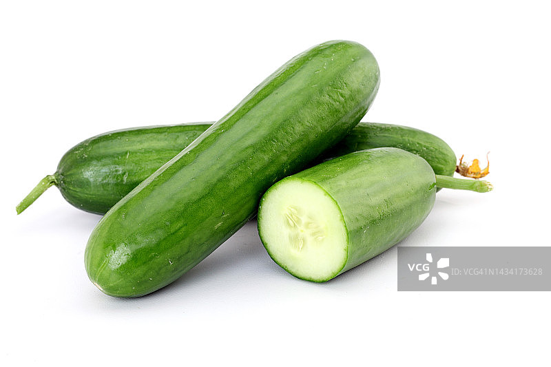
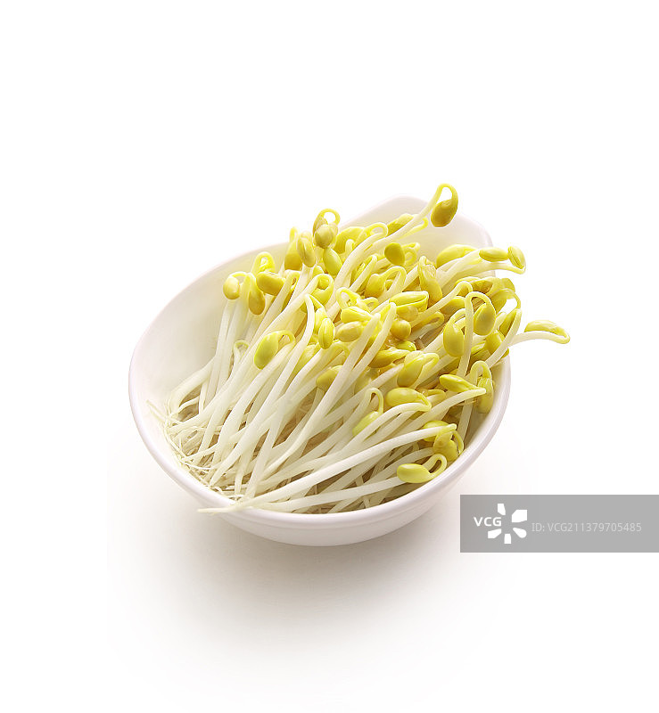
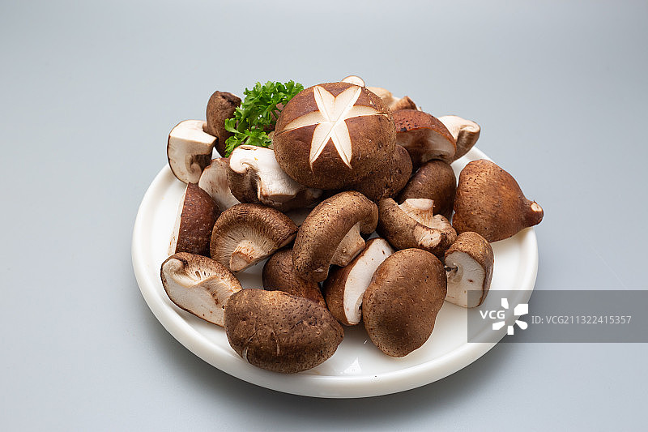
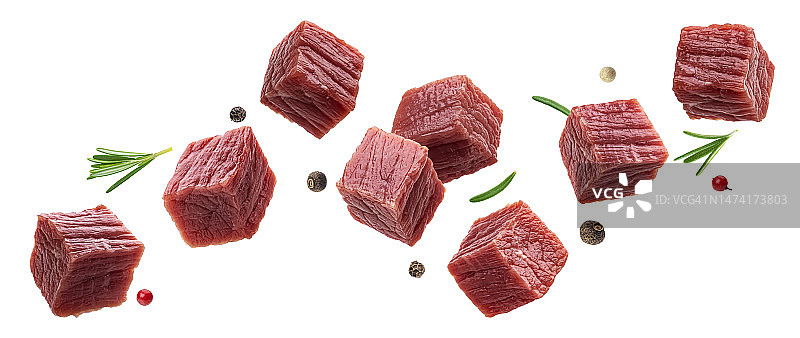
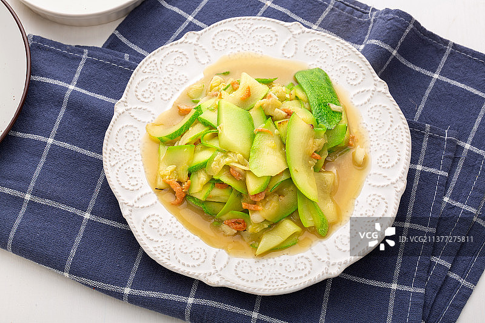
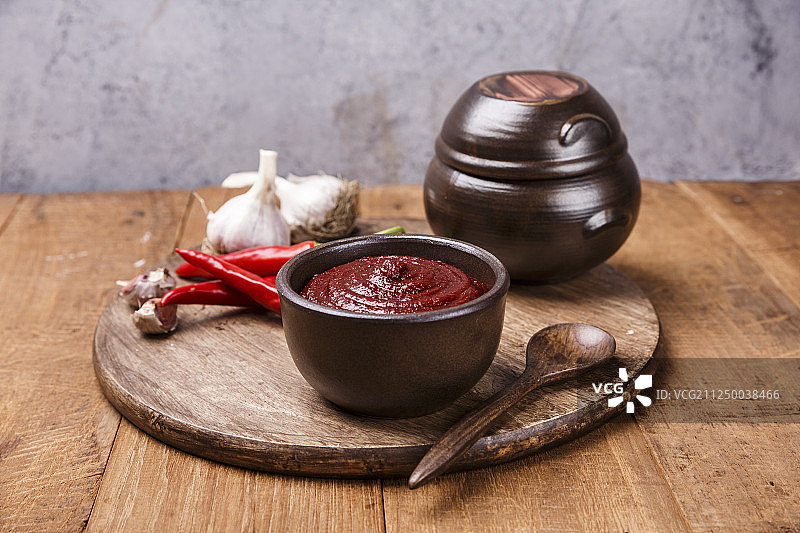
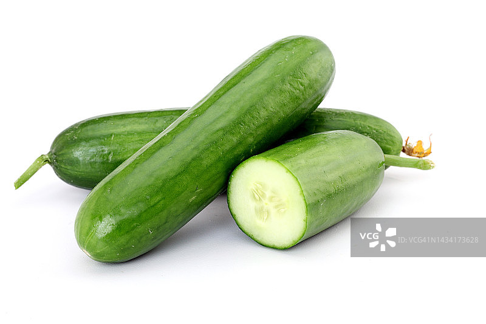
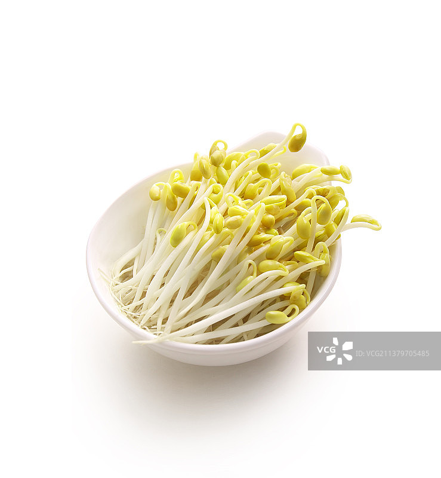
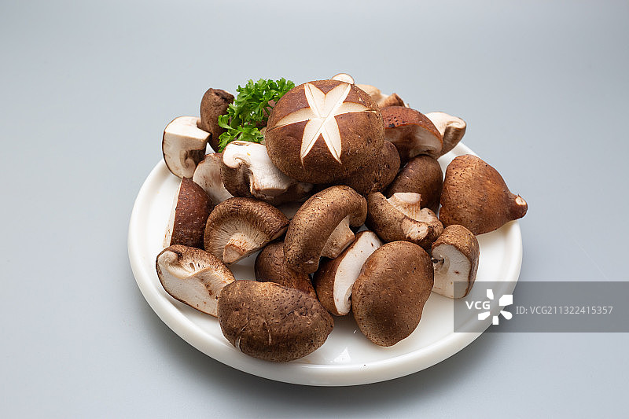
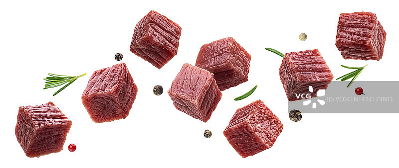
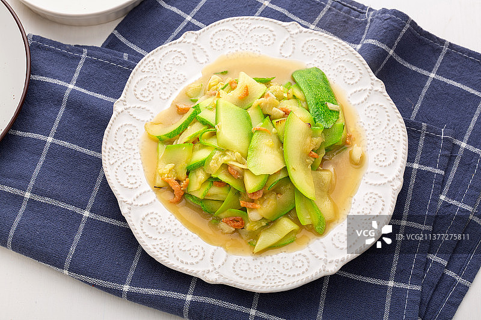
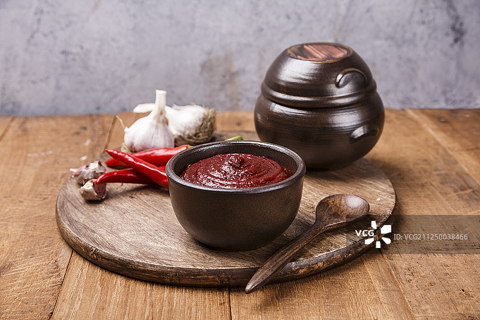

石锅拌饭最早出现在朝鲜王国时期的《是议全书》中，以“骨董饭”或“汨董饭”的名称出现，并有详细的烹调方法。
它起源于韩国全罗北道，后来成为朝鲜半岛的代表性食物之一，也是朝鲜半岛三大名菜之一。
石锅拌饭的发源地为韩国全州，全州拌饭以全罗道的淳昌糯米辣椒酱为特色，品质很高。
石锅拌饭不仅是一道美味的菜肴，更是一道营养均衡的健康食品。
它包含了多种食材，如米饭、肉类、鸡蛋、蔬菜等，提供了丰富的蛋白质、碳水化合物、维生素和矿物质。
此外，石锅拌饭还蕴含着“五行五脏五色”的原理，不同颜色的食材对应不同的五行元素，有助于调和人体的五脏。
主料：米饭、牛肉或猪肉、鸡蛋。
蔬菜：胡萝卜、菠菜、黄豆芽、香菇、黄瓜、西葫芦等。
调料：韩式辣酱、香油、盐、蒜末、花椒粉、生抽等。
其他：石锅。
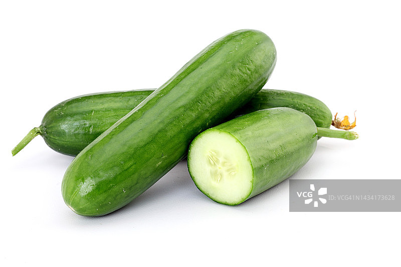
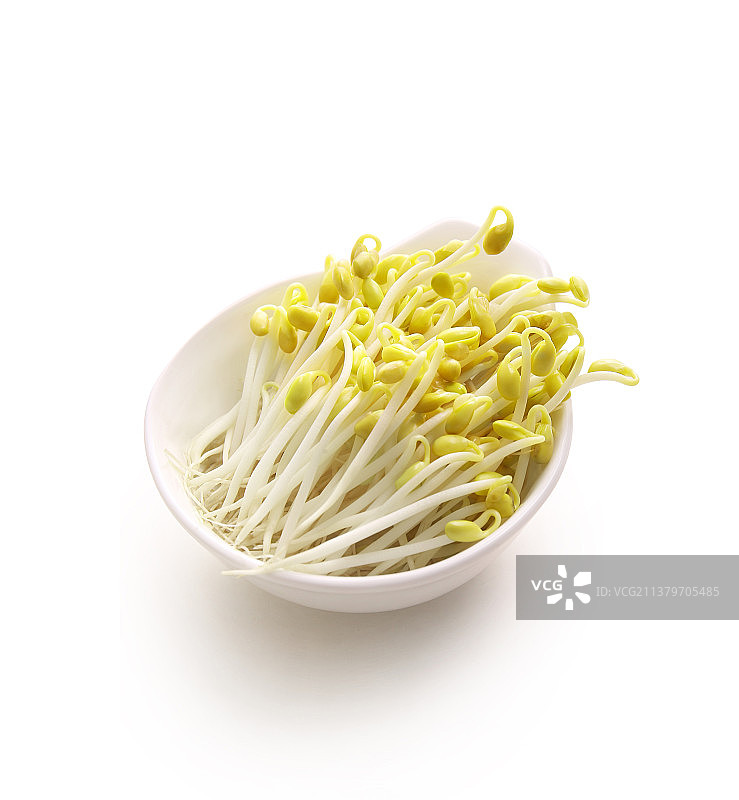
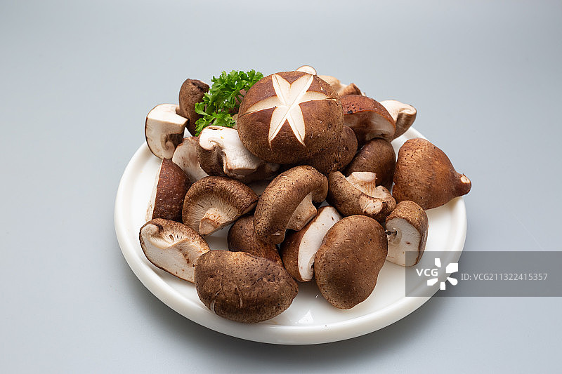
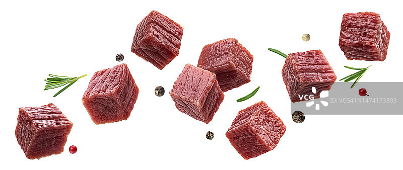
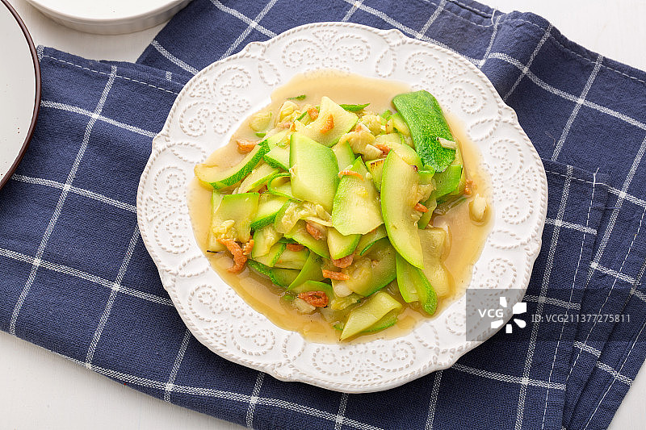
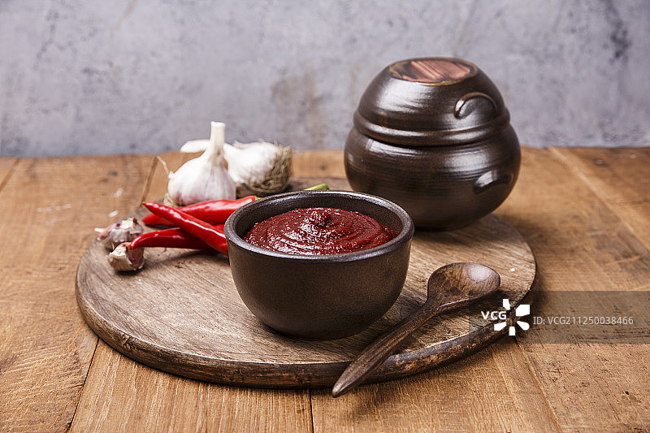
准备食材： 将蔬菜洗净，切成细丝或小段，分别烫熟或炒熟，加入少许盐和调料增加风味。 将牛肉或猪肉切成丝或丁，用生抽、花椒粉等调料腌制10分钟。 鸡蛋煎至半熟，备用。 烹饪肉类： 热锅爆香蒜末，放入腌制好的肉丝炒至变色。 准备石锅： 在石锅内壁刷一层油，防止粘锅。 将米饭均匀铺在石锅底部。 摆放食材： 将炒好的蔬菜、肉类均匀摆放在米饭上。 在中间放入煎好的鸡蛋。 加热石锅： 将石锅放在炉具上加热，直到听到石锅底部发出“滋滋”声。 调味与拌匀： 根据个人口味，在饭上均匀涂抹韩式辣酱。 用勺子将石锅中的米饭和食材充分搅拌，使辣酱和其他食材完全融合。
米饭选择：米饭最好选择稍硬一些的，这样更容易与食材混合均匀。
石锅预热：石锅需提前预热，确保食材放入后能迅速加热。
火候控制：加热石锅时，火候不宜过大，以免烧焦。
食材搭配：可根据个人口味选择不同的蔬菜和肉类，但需注意营养均衡。
辣酱选择：韩式辣酱的多少决定了拌饭的辣度，可根据个人承受能力调整。